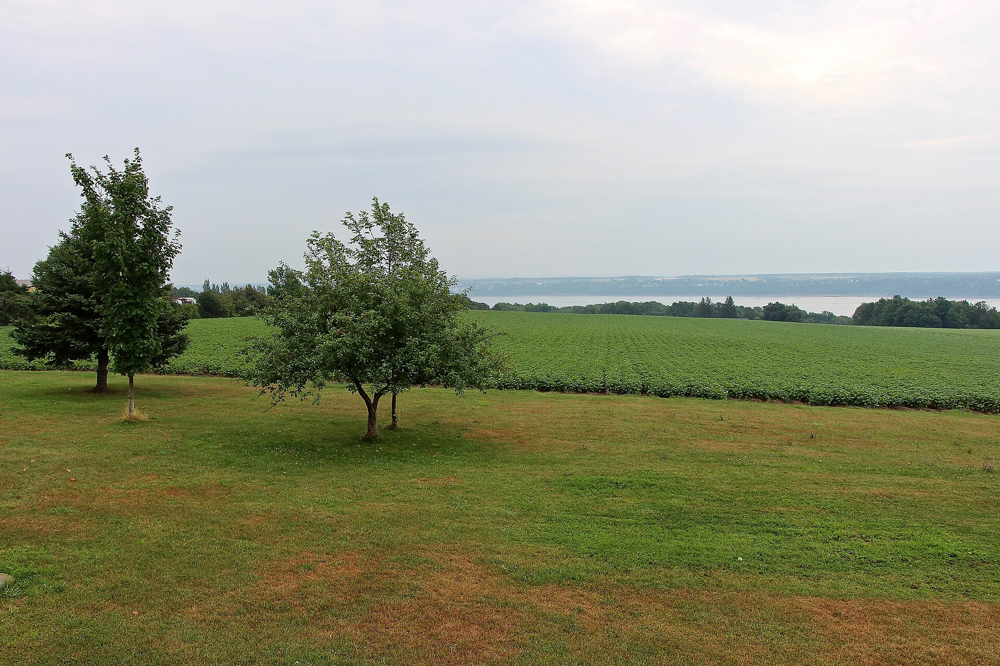

| Place | Local name | Phase years | Storeys | Roof | Window | Cladding | Garage |
|---|---|---|---|---|---|---|---|
| Charlesbourg (Trait-Carré) | Québec house of neoclassical inspiration La maison québécoise d'inspiration néoclassique | 1760 – 1875 | – | gabled | vertical | wood-board-vertical, wood-clapboard, fieldstone-rendered | – |
| Gatineau | Central-gable house (maison à pignon central) La maison à pignon central | 1850 – 1900 | 1.5–2.5 | gabled | vertical | wood-clapboard, wood-shiplap, wood-piece-sur-piece, clay-brick-red, stone | – |
| Île d'Orléans | Traditional Québec house of neoclassical influence La maison traditionnelle québécoise d'influence néoclassique | 1760 – 1840 | 1.5–2.5 | gabled | vertical | wood, brick, fieldstone-rendered | – |
| Lévis | Franco-Québécois transitional house Franco-québécois | 1780 – 1861 | 1.5 | bellcast | – | fieldstone, stucco-render, wood-clapboard, wood-shingle | – |
| Lévis | Québécois traditional house Québécois | 1780 – 1861 | 1.5–2.5 | bellcast | – | wood-clapboard, wood-shingle | – |
| Lévis | Neoclassical house Néoclassique | 1780 – 1861 | 2–3 | gabled-or-hipped | – | clay-brick, cut-stone, wood-clapboard | – |
| Québec City | Franco-Québécois transition house Maison de transition franco-québécoise | 1760 – 1840 | 1.5 | gabled | vertical | stone, wood-piece-sur-piece, wood-clapboard, roughcast, stucco | – |
| Québec City | London-type terrace house Maison londonienne | 1760 – 1840 | 2.5–3.5 | gabled | vertical | cut-stone, clay-brick, roughcast | – |
| Québec City | Québécois neoclassical house Maison néoclassique québécoise | 1820 – 1880 | 1.5 | gabled | vertical | wood-clapboard, wood-shingle, clay-brick | – |
| Québec City | Rudimentary faubourg house Maison de faubourg | 1840 – 1890 | 1–1.5 | gabled | vertical | wood-board-vertical, wood-clapboard, clay-brick, roughcast, stucco | – |
| Saint-Lambert | Traditional French and Québécois house La maison traditionnelle française et québécoise | 1700 – 1830 | 1.5 | gabled | vertical | stone, roughcast, wood | none |
| Vieux-Terrebonne | Neoclassical Québécois stone house La maison québécoise d'inspiration néoclassique | 1832 – 1900 | 2.5 | gabled | vertical | stone | – |
| Trois-Rivières | Well-to-do bourgeois house in stone and brick (maison cossue) La demeure bourgeoise / la résidence cossue | 1860 – 1908 | 2–2.5 | gabled-or-hipped | vertical | stone, cut-stone, clay-brick | none |

